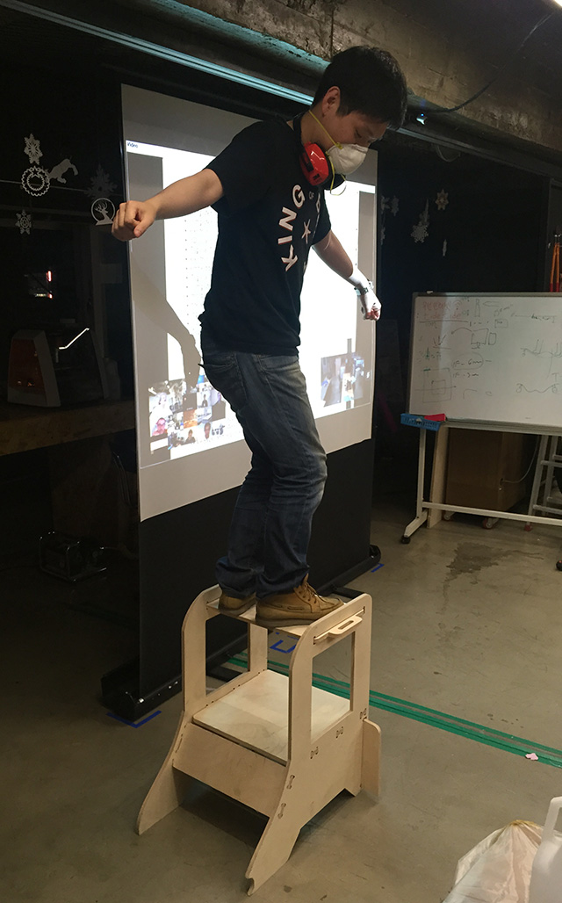
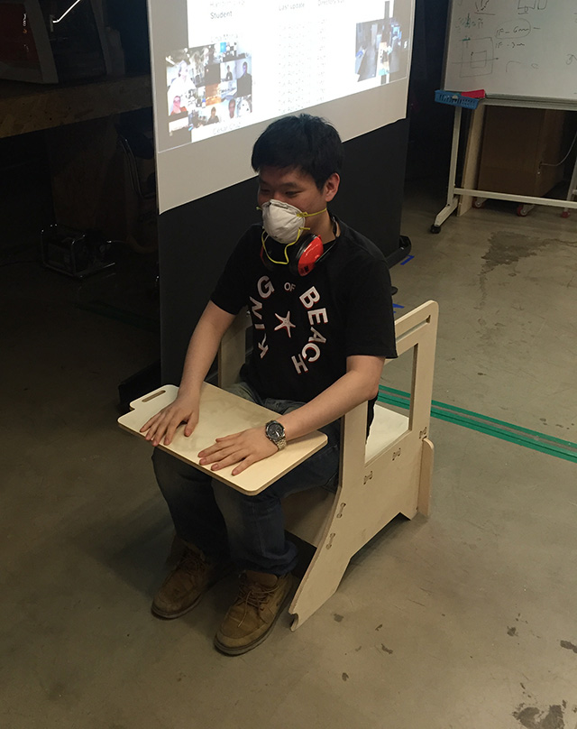
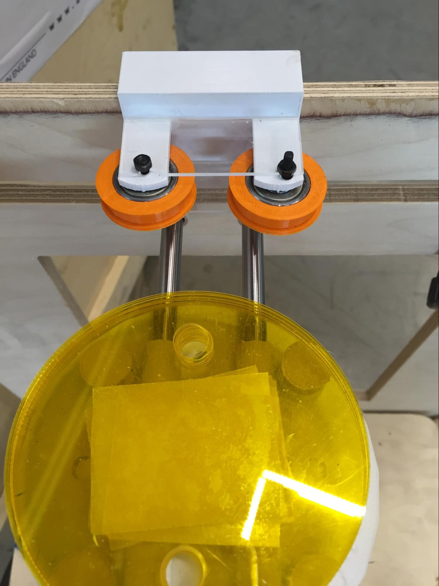
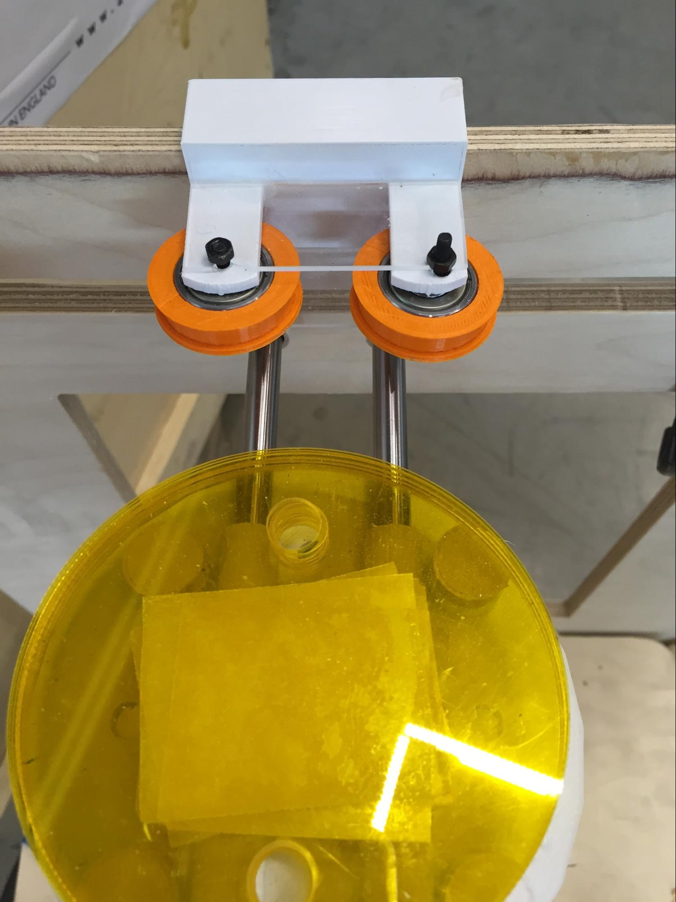

(Self - Yourself Plant - Water)
As one of my primary goal was to move object to do something I’ve pivoted my idea to be more useful in a way that people can do more stuff with it and I call self watering of the plant .
Start with a small to build much more bigger thing. There are many things i wanted to learn such as bluetooth module, remote control, wireless network. By thinking thoroughly and looking at the toy crane which i normally see around the theatre’s game zone I thought maybe controlling certain thing from one to the other is very important

It started from the idea of toy crane which is an entertainment game box for fun.
Reason why I’m trying to build this thing is because I get to control in all directions. like 3D printer. Obviously i need a lot of work done with controlling the stepper motor to move in the direction that i want
My main goal is to make machine move around in XYZ axes to do certain things
As a matter of fact, I tend to re-use the thing i built from CNC project.

Requirement for my project
-
Outer frame // done : re-use the CNC project)
-
Output device (Two Stepper motor control, redesign for using one power supply)
-
Multi-stepper motor control // ~ one week
-
Getting Parts // ASAP
-
Water hose & humidity sensor //
Final Project to do list
-
Bearings (done)
-
Stepper fixing part
-
middle where water hose is connected (done)
-
3D model : bottom bearing thing
-
side part - just 3D print
START MAKING !
Main electronics using FabKit I need to control the board with my redesigned board.
3D modeling the parts -
As i wasn’t making the modeling parts when i was doing assingments i had to make the new parts model in the reference of last year Fab Academy student ‘Robert Garita’ who used Core XY module for his final project. As i have mentioned earlier my main goal is to control from one position to one position
 
3D printing was what I had spend too much time on it. It was a disaster since the other printers were not in good state. Maybe it was better to only focus on only one machine and let the other stuff to be finished.
I did trial with the rod and made sure rod can be easily movable and made tolerance 0.4mm on each radius for easy slide movement.
No string attached !
- I thought a lot about which material I would use for controlling, and at first thing I got an elastic band which I thought It wouldn’t be a problem.
STRUGGLING STEPS
-
3D model parts not showing the equal output as I intended.
-
Finding what causes the problem? Right material( changed from elastic band, normal string blue wire and finally with the shoestring. Now I know with correct material it saves a whole lot of time
-
Bearings !!! Main reason why my final project took more times than
-------------------------------------------------------
BUILD OF MATERIALS (BOM)
-------------------------------------------------------
2 x stepper motors ($ 10 each) total $20
4 x humidity sensors ($ ?? each) made out of FR1 Board (1 sheet which is 0.80 EURO)
1 x water pump (10,000 won includig VAT) $10
1 x CNC cut outer frame( ⅓ of plywood) $10
1 x Solid state relay ($10)
1 x water hose ($1 , 1m per unit)
Shoe strings 2m = recycle from old shoes.
Total of 51.80 Euro
-------------------------------------------------------
WHAT LIES AHEAD
-------------------------------------------------------
The very core module which controls the axes don’t change and It can be implented everywhere that needs movement .
-------------------------------------------------------
WHAT HAVE I LEARNT
-------------------------------------------------------
Basically understanding what kind of thing is digital and analog and all the basic electronic theory is what I have learnt so far, and it won’t be stopped until I stop making stuff (which means I’ll keep learn about electronic theory continuously)
Just as I started assembling the parts after I printed out all the results I faced a lot of different problem to be solved. Tolerance was just a beginning. Not intending to see the way how the production going was very hard.
Now, I don’t hesitate to use the 3D modeling tool to make something like the piece to hang the object to top si e corner. By thinking in
Stepper motor is strong but in the same way, there must be some environment (what i mean by machine parts) to be in perfect position(locked!!) position otherwise the tension doesn’t make the machine to move.
My final project took me almost 3 days of fixing 3D models and my whole night struggling to find out what causes the loosened tension with the strings.